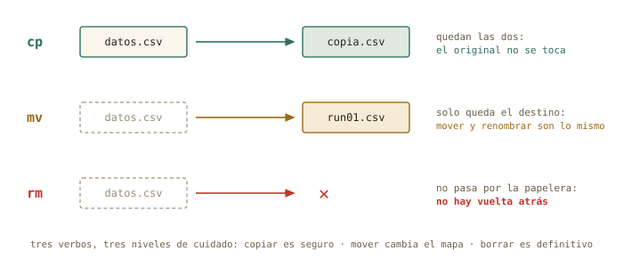
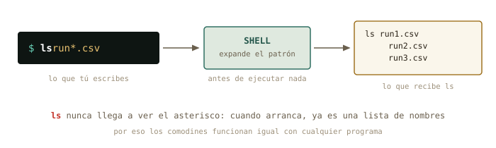
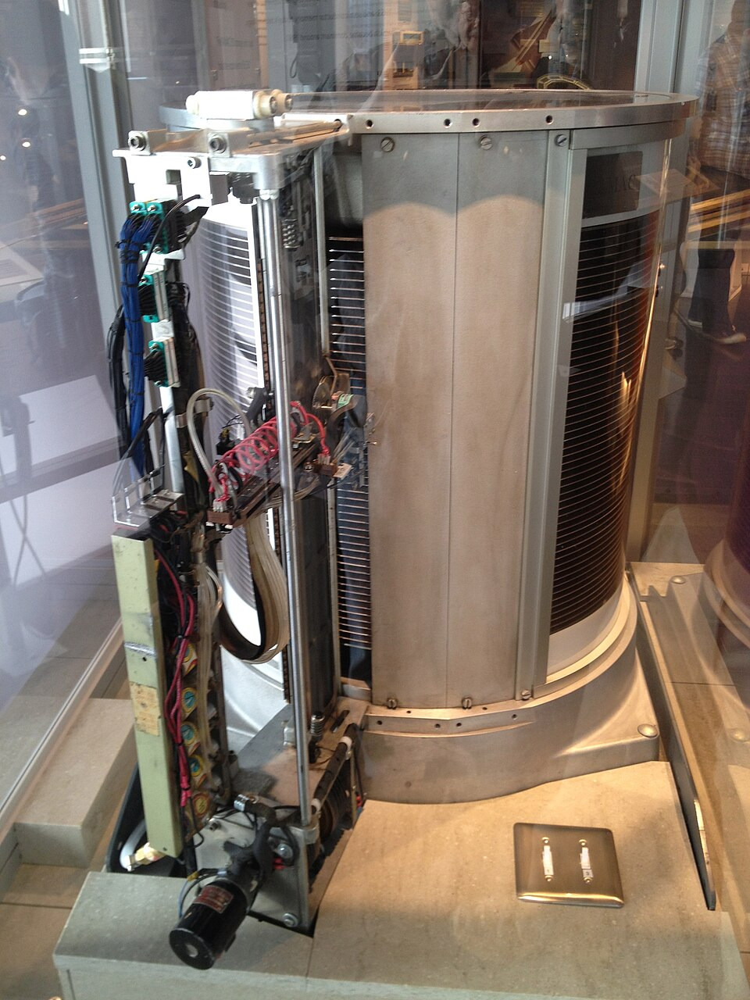
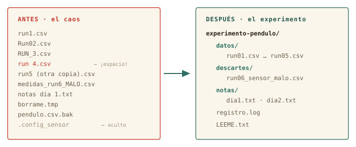

2 Ficheros: tocar sin romper
En la primera sesión aprendiste a mirar: dónde estás, qué hay, cómo moverte. Hoy los ficheros dejan de ser intocables: vas a leerlos, crearlos, copiarlos, moverlos y — por primera vez — destruirlos. Con red de seguridad, porque en esta casa el borrado no tiene papelera.
Al terminar esta sesión sabrás
- Mirar dentro de cualquier fichero de texto con
cat,less,headytail, sin abrir ningún programa gráfico. - Crear estructura con
mkdiry copiar, mover y renombrar concpymv— y por qué mover y renombrar son el mismo gesto. - Borrar con
rmsabiendo exactamente por qué no perdona, y qué hacer antes de pulsar Intro. - Seleccionar familias enteras de ficheros con comodines (
*,?), entendiendo quién los expande de verdad. - Localizar cualquier cosa con
find. - Editar ficheros en la terminal con
nano, y estrenar tus dotfiles con un alias propio.
2.1 Mirar dentro sin miedo
Tienes desde la sesión pasada un fichero de medidas esperando en ~/Descargas. Sabes llegar hasta él; hoy, por fin, vas a abrirlo. El gesto más directo es cat (concatenate), que vuelca el contenido completo en la pantalla:
marcos@portatil:~$ cd ~/Descargas
marcos@portatil:~/Descargas$ cat pendulo_medidas.csv
medida,longitud_m,periodo_s,incertidumbre_s
1,0.50,1.42,0.02
2,0.50,1.40,0.02
3,0.50,1.43,0.02Para veinte líneas, perfecto. Pero un fichero de adquisición real puede tener veinte millones, y cat las escupiría todas. Para eso existe less: un visor por páginas — exactamente el mismo que usa man, así que ya te sabes sus teclas: ↑/↓ y Espacio para avanzar, / para buscar, q para salir.
marcos@portatil:~/Descargas$ less pendulo_medidas.csvY muchas veces no quieres el fichero entero, sino un vistazo: head enseña las primeras líneas y tail las últimas — la forma más rápida de comprobar cómo empieza y cómo acaba una tanda de medidas:
marcos@portatil:~/Descargas$ head -3 pendulo_medidas.csv
medida,longitud_m,periodo_s,incertidumbre_s
1,0.50,1.42,0.02
2,0.50,1.40,0.02
marcos@portatil:~/Descargas$ tail -2 pendulo_medidas.csv
19,1.10,2.10,0.02
20,1.10,2.12,0.02La opción -3 es el número de líneas. Fíjate en que acabas de leer un fichero de datos con cuatro herramientas distintas sin abrir una sola ventana. ¿Podías haberle hecho doble clic? Claro. Pero el doble clic no escala: cuando tengas doscientos ficheros de un barrido de simulaciones, head seguirá costando un segundo.
◉ Por dentro · Por qué todo esto funciona con cualquier fichero
Para Linux un fichero es solo una secuencia de bytes con nombre. No hay ficheros «de Word» o «de Excel» a nivel del sistema: la extensión .csv es una pista para humanos, no una regla. Por eso cat y less abren cualquier cosa — aunque si abres un binario (una foto, un ejecutable) verás caracteres sin sentido: los bytes no eran texto. En el capítulo 3 exprimirás esta idea: si todo es texto o bytes, todo se puede encadenar.
2.2 Crear: mkdir y touch
Un experimento ordenado empieza por su estructura de carpetas. mkdir (make directory) crea directorios, y con la opción -p crea de una vez toda una ruta con sus niveles intermedios:
marcos@portatil:~$ mkdir fisica
marcos@portatil:~$ mkdir -p fisica/practicas/optica/datos
marcos@portatil:~$ ls fisica/practicas
opticaSu compañero menor es touch, que crea un fichero vacío (o actualiza la fecha de uno existente). Útil para dejar un marcador o preparar un fichero de notas:
marcos@portatil:~$ touch fisica/practicas/optica/notas.txt2.3 Copiar y mover: cp y mv
Los dos siguen la misma gramática de tres piezas del capítulo 1: programa, origen, destino.
marcos@portatil:~/Descargas$ cp pendulo_medidas.csv copia_seguridad.csv
marcos@portatil:~/Descargas$ mv copia_seguridad.csv ~/fisica/
marcos@portatil:~/Descargas$ ls ~/fisica
copia_seguridad.csv practicascp (copy) duplica: el original no se toca. mv (move) traslada: solo queda el destino. Y aquí viene el gesto que confunde a todo el mundo la primera vez: renombrar es mover. No hay comando «rename» — mover un fichero a otro nombre dentro de la misma carpeta es renombrarlo:
marcos@portatil:~/fisica$ mv copia_seguridad.csv pendulo_v1.csvPara copiar carpetas enteras con todo lo que contienen, cp necesita la opción -r (recursive): cp -r practicas practicas_backup.

cp es reversible por naturaleza; mv cambia el mapa; rm no tiene vuelta.
✚ Truco · El tabulador vale doble aquí
En cp y mv casi todo son nombres de ficheros: territorio ideal del tabulador. mv penTab completa el origen; y si el destino es una carpeta, Tab también la completa. Menos teclear, cero erratas — y recuerda: si Tab no completa, el fichero no está donde crees. Esa comprobación gratuita evita la mitad de los mv arrepentidos.
2.4 Borrar: el comando sin papelera
Llegó el primer comando con consecuencias. rm (remove) borra ficheros, y rm -r borra carpetas con todo lo que contengan:
marcos@portatil:~/fisica$ rm pendulo_v1.csv
marcos@portatil:~/fisica$ ls
practicasAhora lee esto despacio, porque es de las frases importantes del curso: rm no pasa por la papelera. No hay icono desde el que restaurar, no hay «deshacer». El espacio se marca como libre y el sistema lo reutilizará cuando quiera. En el escritorio llevas años protegido por la papelera del gestor de archivos; en la terminal, la protección eres tú.
Tu red de seguridad son dos costumbres y una opción:
- Antes de un
rmcon comodines, ensaya conls. El mismo patrón que vas a borrar, pero listándolo:ls run*.csv. Lo que te enseñelses exactamente lo que borrarárm. Es tu predicción teórica antes del experimento irreversible. - En
rm -r, ruta completa y tabulador, nunca escrita a mano. - La opción
-i(interactive) pide confirmación fichero a fichero:rm -i *.tmp.
△ Cuidado · La papelera gráfica sí perdona; rm no
Si arrastras un fichero a la papelera del escritorio de Mint, puedes recuperarlo: esa es la diferencia real entre las dos vías, y no es menor. Mientras aprendes, borra en tus carpetas de prácticas, no en tus datos reales — y recuerda que la regla del curso es que lo destructivo de verdad (particionar, formatear) vivirá siempre en la máquina virtual del bloque C.
2.5 Comodines: hablar de familias enteras
Hasta ahora has nombrado los ficheros de uno en uno. Los comodines (wildcards) nombran familias: * significa «cualquier cosa, incluso nada» y ? «exactamente un carácter». run*.csv son todos los CSV que empiecen por run; run?.csv solo los de un dígito.
marcos@portatil:~/Descargas$ ls run*.csv
run1.csv run2.csv run3.csv
marcos@portatil:~/Descargas$ cp run*.csv ~/fisica/practicas/optica/datos/Una sola línea acaba de copiar toda una serie de medidas. Este es el momento en que la terminal empieza a pagar el peaje de aprenderla: lo que en el gestor de archivos serían tres viajes de ratón (o treinta, con más series), aquí es una orden.

ls recibe la lista ya hecha.
◉ Por dentro · El asterisco nunca llega al programa
La expansión (globbing) la hace el shell, antes de ejecutar nada: cuando ls arranca, ya recibe run1.csv run2.csv run3.csv como argumentos, y no sabe que hubo un asterisco. Por eso los comodines funcionan igual con cualquier comando, incluso con programas que escribas tú — nadie tuvo que programarlos. Y por eso, si el patrón no casa con nada, el programa recibe el asterisco tal cual y suele protestar: el shell no tenía nada que expandir.
△ Cuidado · El espacio asesino
rm run*.csv borra la familia run…. Pero rm run* .csv — con un espacio colado — son dos argumentos: la familia run* entera y un fichero llamado .csv. El shell expande y rm obedece sin preguntar. Es el accidente clásico de esta sesión: antes de cualquier rm con patrón, ensáyalo con ls. Siempre.
2.6 Encontrar: find
ls enseña lo que hay aquí; find busca por todo el árbol. Sus argumentos son un punto de partida y condiciones:
marcos@portatil:~$ find ~/fisica -name "*.csv"
/home/marcos/fisica/practicas/optica/datos/run1.csv
/home/marcos/fisica/practicas/optica/datos/run2.csv
/home/marcos/fisica/practicas/optica/datos/run3.csv
marcos@portatil:~$ find ~/fisica -type d
/home/marcos/fisica
/home/marcos/fisica/practicas
/home/marcos/fisica/practicas/optica
/home/marcos/fisica/practicas/optica/datos-name filtra por nombre (fíjate en las comillas: protegen el * para que lo expanda find y no el shell — acabas de usar lo que aprendiste en la caja anterior). -type d pide solo directorios; -mtime -1, solo lo modificado en el último día. En el capítulo 3, find se convertirá en el generador de listas que alimenta a todos los demás comandos.
2.7 Editar: nano (y la verdad sobre vim)
Leer y organizar está bien; en algún momento hay que escribir. El editor de terminal del curso es nano, por una razón honesta: se aprende en un minuto y está en todas partes.
marcos@portatil:~/fisica$ nano practicas/optica/notas.txtSe abre un editor a pantalla completa. Escribes como en cualquier sitio, y las dos teclas que importan están siempre rotuladas abajo: Ctrl+O guarda (write Out, confirma el nombre con Intro) y Ctrl+X sale. El símbolo ^ de la barra inferior significa Ctrl.
¿Y para qué sirve un editor de terminal existiendo el editor gráfico de Mint? Hoy, para poco. Pero dentro de unas sesiones estarás dentro de un servidor remoto donde no hay ventanas: allí nano no es una opción retro, es la única mesa de trabajo. Lo aprendes hoy, en casa, para que ese día sea trámite.
◷ Historia · Por qué vim asusta (y por qué existe)
El editor que verás mencionado con reverencia es vim. Su antepasado ed (1969) se diseñó para teletipos: sin pantalla, editar era dar órdenes a ciegas línea a línea — con papel, refrescar la vista costaba tinta. Cuando llegaron las pantallas nació vi (visual, 1976), que arrastra ese ADN: tiene modos — uno para órdenes y otro para escribir — y por eso millones de personas han tecleado texto y visto cómo el editor lo interpretaba como comandos. Es potentísimo y quizá lo ames algún día; este curso solo te pide saber salir si caes dentro por accidente: Esc y luego :q! e Intro. Ya formas parte del club de los que saben salir de vim.
2.8 Tus primeros dotfiles
En el capítulo 1 descubriste con ls -a los ficheros ocultos de tu casa: los que empiezan por punto, los dotfiles. No están ocultos por secretos, sino por higiene: son configuración, y estarían en medio todo el día. Hoy vas a editar el más importante: .bashrc, el fichero que bash lee cada vez que abres una terminal.
marcos@portatil:~$ nano .bashrcBaja hasta el final (con Ctrl+V avanzas página a página) y añade esta línea:
alias ll='ls -lh'Guarda y sal. Un alias es un atajo: a partir de ahora ll significará ls -lh. Para que la terminal actual se entere sin cerrarla, recarga la configuración:
marcos@portatil:~$ source ~/.bashrc
marcos@portatil:~$ ll
total 44K
drwxr-xr-x 2 marcos marcos 4,0K ago 24 10:12 Descargas
drwxr-xr-x 3 marcos marcos 4,0K ago 24 10:15 fisicaAcabas de configurar tu sistema editando un fichero de texto. Ese es el modo Linux de configurar todo — el capítulo 4 te enseñará cuántas cosas de tu máquina son exactamente esto: un fichero de texto en el sitio correcto.

2.9 Práctica: poner orden en el laboratorio
Sesión de campo. Te ha llegado el directorio de un experimento tal como quedó el último día: duplicados, nombres con espacios, una serie de medidas inservible y ficheros temporales. (Los ficheros se llaman run…: es la jerga del laboratorio para cada serie de medidas, y así la verás en cualquier grupo.) Tu misión: dejarlo presentable usando todo lo de esta sesión.
Arranca tu cuaderno (script sesion02.log) y descarga experimento-desordenado.zip. Extráelo como prefieras — doble clic en el gestor de archivos vale: descomprimir es una de esas cosas que la vía gráfica hace perfectamente bien. Te quedará una carpeta experimento-pendulo en ~/Descargas.

Ejercicio 2.1 · Reconocimiento
Entra en la carpeta y haz inventario completo — incluido lo oculto. Después mira dentro de registro.log y de las notas: ¿qué serie está mal y por qué? ¿Qué dos ficheros son en realidad el mismo?
cd ~/Descargas/experimento-pendulo, ls -a (aparece .config_sensor), y cat registro.log o less sobre las notas. El log canta: ERROR sensor congelado en 45.0 (run6) — y head medidas_run6_MALO.csv lo confirma: todos los ángulos valen ~45. Las notas del día 2 confiesan que run 4.csv y run5 (otra copia).csv son la misma serie guardada dos veces.
Por qué así — Antes de mover o borrar nada, un físico lee el cuaderno del experimento. head te deja ver el fallo del sensor en los datos sin abrir ningún programa: eso es diagnosticar desde la terminal.
Ejercicio 2.2 · Copia de seguridad primero
Antes de tocar nada: haz una copia completa de la carpeta, llamada experimento-pendulo-original. Comprueba que la copia existe y tiene lo mismo.
Desde ~/Descargas: cp -r experimento-pendulo experimento-pendulo-original, y comprobación con ls experimento-pendulo-original (o ls -a, si quieres verificar que el oculto también viajó — sí: -r copia todo).
Por qué así — Regla de oro antes de reorganizar datos reales: copia primero, ordena después. cp -r convierte «espero no equivocarme» en «da igual si me equivoco». El coste es un comando; el seguro, total.
Ejercicio 2.3 · Estructura
Dentro de experimento-pendulo, crea de una sola orden la estructura datos/, descartes/ y notas/.
mkdir datos descartes notas — mkdir acepta varios argumentos y los crea todos. (También valía tres mkdir seguidos; y si hubieras querido niveles anidados, -p.)
Por qué así — Un comando, varios argumentos: la gramática del capítulo 1 trabajando para ti. La estructura antes que el contenido: primero las estanterías, luego los libros.
Ejercicio 2.4 · La serie, en limpio
Lleva las cinco series buenas a datos/ con nombres uniformes run01.csv … run05.csv (recuerda las comillas para los nombres con espacios), y la serie mala a descartes/ con un nombre que avise: run06_sensor_malo.csv.
Cinco mv con renombrado incluido — mover y renombrar son el mismo gesto:
mv run1.csv datos/run01.csv · mv Run02.csv datos/run02.csv · mv RUN_3.csv datos/run03.csv · mv "run 4.csv" datos/run04.csv · mv "run5 (otra copia).csv" datos/run05.csv · mv medidas_run6_MALO.csv descartes/run06_sensor_malo.csv
Por qué así — Las comillas protegen los espacios y paréntesis: sin ellas, run 4.csv serían dos argumentos y mv protestaría (o algo peor). ¿Tedioso uno a uno? Sí — el renombrado en lote de verdad llega cuando sepas encadenar comandos: esta molestia de hoy es la motivación del capítulo 3. Y fíjate: run01 y no run1, para que el orden alfabético coincida con el numérico cuando haya más de nueve.
Ejercicio 2.5 · Limpieza fina
Mueve las notas a notas/ (renombrándolas a dia1.txt y dia2.txt), y borra lo que no aporta nada: el temporal y el .bak. Ensaya el borrado con ls antes de ejecutarlo.
mv "notas dia 1.txt" notas/dia1.txt y mv notas_dia2.txt notas/dia2.txt. Para el borrado, primero el ensayo: ls *.tmp *.bak — lista exactamente borrame.tmp y pendulo.csv.bak, nada más. Ahora sí: rm *.tmp *.bak.
Por qué así — El par ls-luego-rm con el mismo patrón es la red de seguridad de esta sesión: la predicción antes de la medida irreversible. Si el ls hubiera enseñado algo inesperado, habrías corregido el patrón sin coste. calibracion.txt y temperatura_lab.csv se quedan: son datos del experimento, no basura.
Ejercicio 2.6 · El censo final
Sin moverte de experimento-pendulo: obtén con un solo comando la lista de todos los .csv que quedan, estén en la subcarpeta que estén. ¿Cuántos hay? ¿Coincide con lo esperado?
find . -name "*.csv" — deben salir siete: cinco en datos/, uno en descartes/ y temperatura_lab.csv en la raíz de la carpeta. (Las comillas en "*.csv": el patrón es para find, no para el shell.)
Por qué así — ls mira una carpeta; find recorre el árbol entero. Ese censo final contra lo esperado es el control de calidad del experimentalista: no «creo que está ordenado», sino «lo he contado». Cierra tu cuaderno con exit y guarda sesion02.log.
2.10 Autocomprobación
Marca una respuesta por pregunta; la corrección es inmediata.
Quieres cambiar el nombre de datos.csv a run01.csv. ¿Qué comando usas?
cp te dejaría dos ficheros, y el comando estándar de renombrar es precisamente mv: mover y renombrar son lo mismo.Borras un fichero con rm y te arrepientes al instante. ¿Qué puedes hacer?
ls, usar -i, y practicar en carpetas de prueba.rm es definitivo: la protección es ensayar antes con ls.En ls run*.csv, ¿quién convierte run*.csv en la lista de nombres?
ls nunca ve el asterisco: recibe la lista ya expandida. Por eso los comodines funcionan con cualquier programa.ls recibe los nombres ya listados. Revisa la figura del globbing.Quieres copiar la carpeta practicas con todo su contenido. ¿Qué necesitas?
-r (recursivo) hace que cp baje por toda la carpeta. Sin él, cp se niega a copiar directorios.cp -r (recursivo); mv la movería en vez de copiarla.Estás dentro de nano y quieres guardar y salir. La secuencia es…
^O guarda (confirmas el nombre con Intro) y ^X sale. Está siempre rotulado en la barra inferior.Esc :q! es el gesto de escape de vim (y además descarta cambios). En nano todo está rotulado abajo: ^O guarda, ^X sale.¿Por qué find . -name "*.csv" lleva comillas en el patrón?
*.csv contra la carpeta actual antes de ejecutar find, y el resultado dependería de dónde estés.find, así que hay que protegerlo del shell con comillas para que llegue intacto.Autocomprobación (test de la sección 2.10) — Respuestas: 1 b · 2 c · 3 a · 4 b · 5 a · 6 b.
La próxima sesión
Hoy has renombrado cinco series de medidas a mano y te ha sabido a poco elegante — bien: esa molestia es la puerta del capítulo 3, donde los comandos dejan de trabajar solos y empiezan a encadenarse, de modo que la salida de uno se convierte en la entrada del siguiente. Ahí aparecen grep, sort y las tuberías. Harás el análisis completo de un registro de adquisición sin abrir Python, y aprenderás cuándo sí conviene abrirlo. Guarda sesion02.log: ya tienes dos medidas en tu cuaderno.
cap. 2 v0.1 · piloto — anota tiempo real invertido, dudas y erratas junto a tu sesion02.log